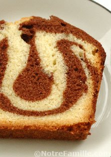

Marbré
Ingrédients
×
- 3 oeufs
- 125 g de sucre
- 125 g de beurre
- 125 g de farine
- 1 sachet de levure chimique
- 70 g de chocolat
- 1 gousse de vanille
- 10 cl de lait

Préparation
Étape 1
Fouetter 3 oeufs avec 125 g de sucre jusqu’à blanchiment. Ajouter 125 g de beurre fondu, puis 125 g de farine tamisée avec 1 sachet de levure chimique.
Étape 2
Diviser la pâte en deux. Dans l’une, ajouter 70 g de chocolat fondu bien lisse ; dans l’autre, 1 gousse de vanille (ou 1 sachet de sucre vanillé).
Étape 3
Ajouter 10 cl de lait petit à petit dans chacune pour que les deux pâtes aient la même consistance, sans être trop liquides.
Étape 4
Cuire environ 30min à 180ºC (th. 6), jusqu’à ce que la lame d’un couteau ressorte sèche.
Résumé
3 oeufs
125 g de sucre
125 g de beurre
125 g de farine
1 sachet de levure chimique
Fouetter
70 g de chocolat
1 gousse de vanille
Diviser la pâte
10 cl de lait
Cuire 180ºC